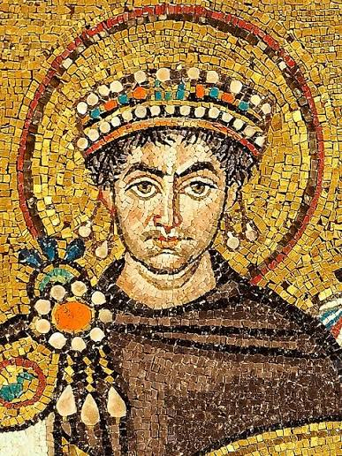

Јустинијан I рођен је око 482. године у Тауресијуму. На престо је дошао 527. године и владао до своје смрти 565. године. Његова владавина представља један од врхунаца ромејске историје.
Заједно са супругом Теодором спровео је велике реформе, ојачао царску управу, обновио градове и покренуо војне походе који су привремено вратили делове некадашњег Западног римског царства.
Систематизација римског права која је постала темељ европских правних система.
Величанствени храм изграђен у Цариграду, симбол царске моћи и хришћанске архитектуре.
Јустинијанови генерали Велизар и Нарсес вратили су велике области у Италији, Африци и на Медитерану.
Јустинијан постаје цар Ромејског царства и започиње велики програм обнове државе, права и војне моћи.
Започиње рад на Corpus Juris Civilis, великој збирци римских закона која ће обликовати правну историју Европе.
После великих немира у Цариграду, цар учвршћује власт и започиње велику обнову престонице.
Нова Света Софија свечано је освећена као највећи храм хришћанског света тог времена.
Војсковође Велизар и Нарсес враћају делове Северне Африке, Италије и Далмације под царску власт.
Јустинијан умире после скоро четири деценије владавине, остављајући снажно, али исцрпљено царство.
Corpus Juris Civilis постао је једно од најзначајнијих правних достигнућа у историји човечанства.
Обновио је Цариград и подигао бројне цркве, тврђаве и јавне грађевине.
Његове војске привремено су прошириле границе царства до области које су некада припадале Западном Риму.
Јустинијаново доба представља један од најважнијих периода ромејске архитектуре, уметности и права.
Јустинијан I остао је упамћен као један од највећих царева Ромејског царства. Његова владавина представља покушај да се обнови јединство Римског света кроз право, војску, архитектуру и хришћанску културу.
Иако су ратови и велике грађевине исцрпели државне ресурсе, његово дело оставило је трајан печат. Света Софија, Corpus Juris Civilis и обнова царске власти постали су симболи његовог доба.

Владар који је спојио римску традицију, хришћанску веру и ромејску државну моћ.